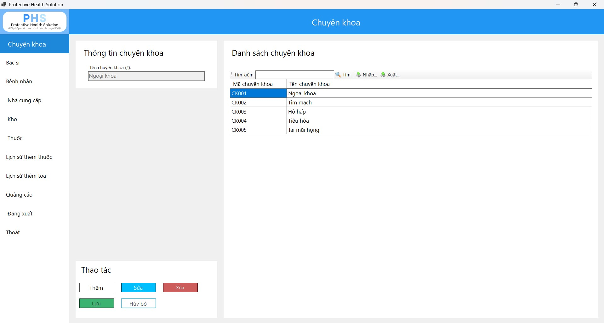

Hướng dẫn sử dụng giao diện Chuyên khoa.

Hướng dẫn sử dụng giao diện Chuyên khoa.
Cho phép người dùng thêm một chuyên khoa mới.
Cho phép người dùng sửa thông tin chuyên khoa đã có.
Cho phép người dùng xóa chuyên khoa đã chọn.
Lưu lại thông tin chuyên khoa sau khi thêm hoặc sửa.
Khôi phục lại trạng thái ban đầu của giao diện.
Tìm kiếm chuyên khoa theo mã hoặc tên.
Xuất toàn bộ danh sách chuyên khoa ra tập tin Excel.
Nhập dữ liệu chuyên khoa từ tập tin Excel.
Đóng ứng dụng sau khi xác nhận.